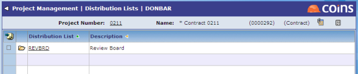

Distribution lists allow you to specify groups of recipients for emails and letters (on the Copies To tab for an item). You can create project distribution lists that are for use on a specific project. These can contain members of the project team, and other personnel and contacts.

The lookup allows you to search for project team members, personnel and contacts.